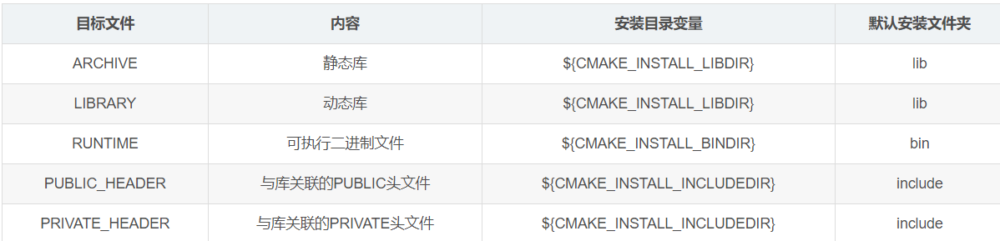

04 install的用法
install的用法
参考链接：
作用
作用：就是把编译生成的可执行文件、静态库、动态库、头文件等拷贝到指定文件夹(${CMAKE_INSTALL_PREFIX})中
目的：
- 使用第三方库时，简化目录结构，install之后就可删掉源码了
- 自己的代码不想让别人看到源码，就把可执行文件、库、头文件install就行了
如何install
1.首先得在CMakeLists中指定install的目标路径（通过${CMKAE_INSTALL_PREFIX}变量）
对于该变量的设置有多种方式：
- 在CMakeLists.txt中，通过
set()设置 - 命令行中，
cmake -DCMKAE_INSTALL_PREFIX=设置
2.在CMakeLists.txt中指定install规则
举个例子：
1 | install(TARGETS lib_sensor lib_common lib_base my_executable |
即设定不同类型的文件具体安装到哪个文件夹，详细看上面那个CSDN链接
除了这种针对文件设定安装规则，还可以直接对目录设定安装规则
3.执行install
同样有多种方式：
- 如果是GNU工具链，在cmake配置后，直接
make install就行了 - 使用cmake工具：
cmake --install <cmake_install_dir>，默认在build目录，且使用该方式安装的话，会生成一个 install_manifest.txt来保存具体安装了什么和路径 - 用VS2019工具链：打开CMake生成的那个
.sln文件，然后右键选择解决方案，用批生成，(首先勾选ALL_Build)，然后勾选install或者uninstall就行了。初次install也会间接全部编译的。
如何uninstall
uninstall也有多种方法：
- GNU工具链：直接
make uninstall - VS2019工具链：打开
.sln文件，勾选uninstall - 手动删除对应文件夹
All articles on this blog are licensed under CC BY-NC-SA 4.0 unless otherwise stated.